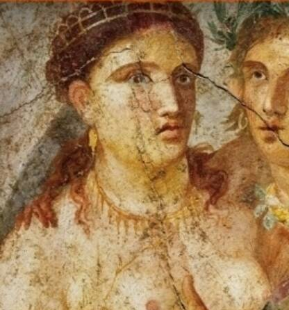
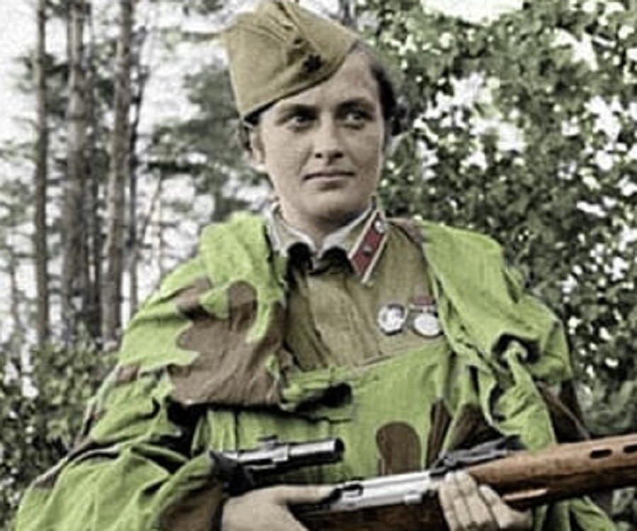

Una fecha (8 de marzo), en la que todo el mundo, entre todos los continentes, se unen para conmemorar a la mujer y su lucha por alcanzar la igualdad, la justicia, la paz y el desarrollo. el día internacional de la mujer reconoce el esfuerzo del mundo femenino, independientemente de las fronteras, lenguas, razas, riqueza e incluso del tiempo.
Veamos algunos ejemplos
En la Antigua Grecia, Lisístrata, una mujer ateniense, empieza y lidera una huelga sexual contra los hombres para poner fin a una guerra civil.
En la Revolución Francesa, las parisienses que pedían "libertad, igualdad y fraternidad" marcharon hacia Versalles para exigir el sufragio femenino.
En plena Segunda Guerra Mundial, mujeres abandonan sus casas y fábricas para luchar contra el ejército nazi y sus aliados.
El dia internacional de la Mujer se declaro como tal por la ONU (Organización de las Naciones Unidas) el 8 de marzo de 1975. Fue desembocada gracias a las manifestaciones de las mujeres, especialmente en Europa.
En Estados Unidos, Elizabeth Candy Stanton y Lucretia Mott organizan una congregación en 1848 de cientos de personas con motivo a que se les prohibe hablar a las mujeres en una convención contra la esclavitud. Inicia uno de los movimientos feministas por el derecho de las mujeres más importantes.
En 1909 se declara el primer Dia Nacional de la mujer, tradición que continua hasta el último domingo de febrero hasta 1913.
En Copenhague (Dinamarca), cientos por medio a la Segunda Conferencia Internacional de Mujeres Socialistas deciden organizar cada año una Jornada Nacional de la Mujer para obtener el sufragio femenino universal
En numerosos países europeos y en Estados Unidos, se manifiesta El Dia Internacional de la Mujer, el 19 de marzo en honor a la revolución de 1848 y de la Comuna de París. Las mujeres exigieron el derecho al voto, y de ocupar cargos públicos, tambien el derecho al trabajo, a la formación profesional y a la no discriminación laboral.
En Rusia y en vísperas de la primera guerra mundial, las mujeres conmemoraron su primer Día Internacional de la Mujer el último domingo de febrero en mítines clandestinos.
En el resto de Europa, las mujeres organizaron reuniones en torno al 8 de marzo del año siguiente para protestar por la guerra o para solidarizarse con el resto de mujeres.
En medio de los estragos de la Primera Guerra Mundial, tiene lugar en La Haya (Países Bajos) una gran reunión de mujeres el 15 de abril. Participan más de 1300 mujeres provenientes de 12 países.
Retornamos a Rusia: las mujeres reaccionan ante los dos millones de soldados rusos muertos en la Gran Guerra con una huelga, en demanda de "pan y paz". El resto es historia: cuatro días después el Zar se vio obligado a abdicar y el gobierno provisional concedió a las mujeres el derecho de voto.
Tras la Segunda Guerra Mundial, el 8 de marzo comenzó a tomar protagonismo en muchos países incluso antes de ser reconocido por la ONU, en 1977, como Día Internacional de la Mujer. Finalmente, en 1975, coincidiendo con el Año Internacional de la Mujer, las Naciones Unidas conmemoraron el Día Internacional de la Mujer por primera vez, el 8 de marzo.
Se eligió el 8 de marzo porque esa es la fecha en la que la mujer adquiere derecho al voto en Rusia en 1917. Lo que pasa es que sucedió un 23 de febrero del calendario juliano, utilizado en la Rusia de aquel entonces, mientras que en el resto de países se utiliza el calendario gregoriano, que es un 8 de marzo.
Creo que es importante que las personas tengan conocimiento de la Historia Humana. Debemos interpretar la historia como si fuera un libro: Un capitulo que no debemos pasar por alto ni tampoco olvidar es la lucha de las mujeres para participar en las decisiones que nos afectan a todos. Constituyen hacia el 49.50% de la población mundial. La opinión en politica, la elección de carrera empresarial o los estudios de la mitad de los humanos existentes debe ser considerado. De esta manera conmemorar el dia internacional de la mujer y tratarlas de acuerdo a la carta internacional de los derechos humanos debe ser un objetivo para los países y debe permanecer en la conciencia de cada individuo.